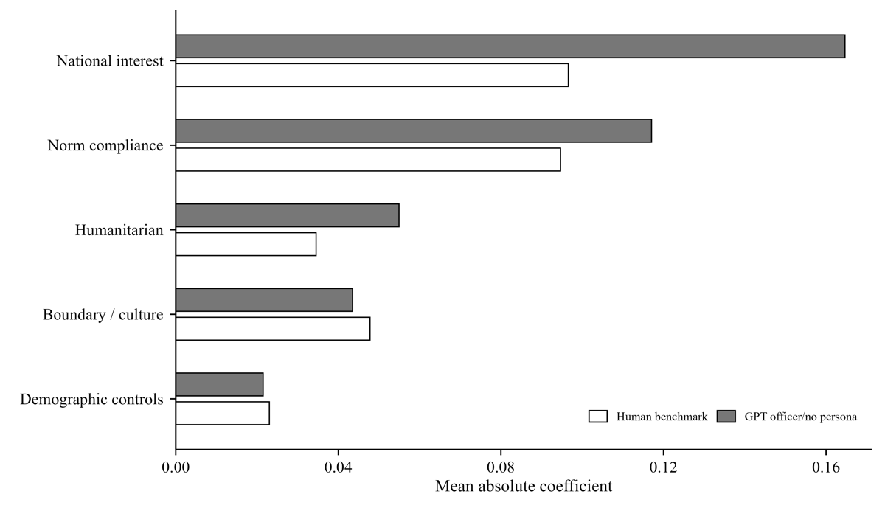
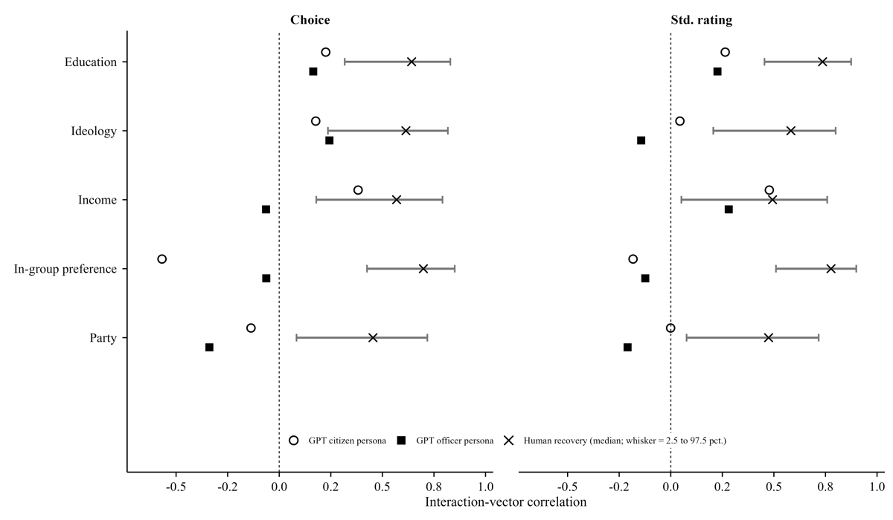

A Decision-Function Framework for Auditing Artificial Decision-Makers: Evidence from an Immigration Conjoint Benchmark
Computers in Human Behavior: Artificial Humans (2026), Article 100411
Abstract. Large language models (LLMs) are increasingly used to stand in for survey respondents and other human decision-makers, but agreement in average responses can mask different ways of weighting case attributes. We propose a decision-function framework that compares human and model outputs at the level of conditional response patterns and calibrates subgroup comparisons against the recoverability of the human target. Using a U.S. immigration conjoint benchmark and matched GPT, Qwen, and Llama evaluations, we find that no-persona LLMs reproduce much of the overall human applicant-weighting pattern while placing greater weight on several features that map readily onto administrative categories. GPT persona prompts show less consistent subgroup correspondence: education, in-group preference, and party depart most consistently from recoverable human subgroup patterns, whereas ideology and income vary across roles and outcomes. Within GPT, prompt-defined role frames also shift persona-conditioned weights. Together, these results show that human–LLM correspondence depends on the comparison being made and, for subgroup claims, on how reliably the human target itself can be recovered.

